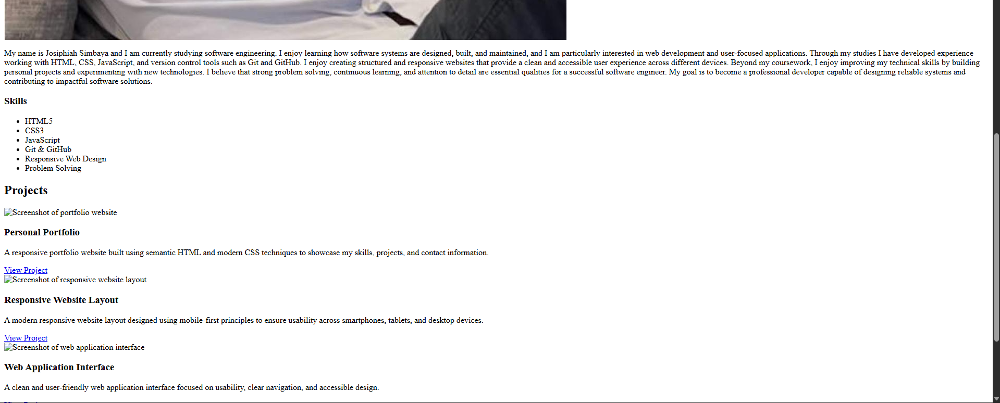
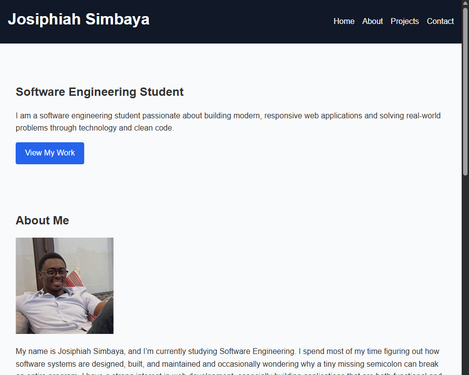
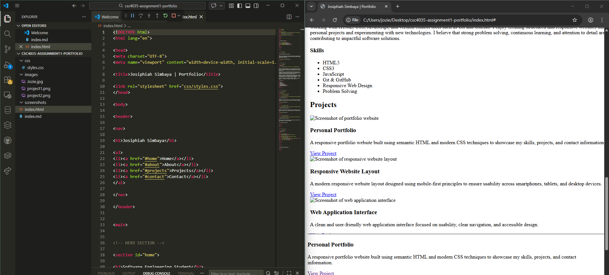

Personal Portfolio
A responsive portfolio website built using semantic HTML and modern CSS techniques to showcase my skills, projects, and contact information.
View ProjectI am a software engineering student passionate about building modern, responsive web applications and solving real-world problems through technology and clean code.
View My WorkMy name is Josiphiah Simbaya, and I’m currently studying Software Engineering. I spend most of my time figuring out how software systems are designed, built, and maintained and occasionally wondering why a tiny missing semicolon can break an entire program. I have a strong interest in web development, especially building applications that are both functional and pleasant to use. Through my studies, I’ve gained experience working with HTML, CSS, JavaScript, and version control tools like Git and GitHub. I enjoy turning ideas into structured, responsive websites that work smoothly across different devices because a website should look good whether you're on a laptop, tablet, or your phone at 2 AM. Outside of coursework, I like sharpening my skills by building personal projects and experimenting with new technologies. For me, coding is a bit like solving puzzles sometimes frustrating, often challenging, but incredibly satisfying when everything finally works. I believe that problem solving, continuous learning, and attention to detail are key traits for a great software engineer. My goal is to grow into a professional developer who can design reliable systems, create meaningful software, and contribute to solutions that actually make people's lives easier (and hopefully break fewer things along the way).

A responsive portfolio website built using semantic HTML and modern CSS techniques to showcase my skills, projects, and contact information.
View Project
A modern responsive website layout designed using mobile-first principles to ensure usability across smartphones, tablets, and desktop devices.
View Project
A clean and user friendly description of programming tools and backbone of the website.
View Project